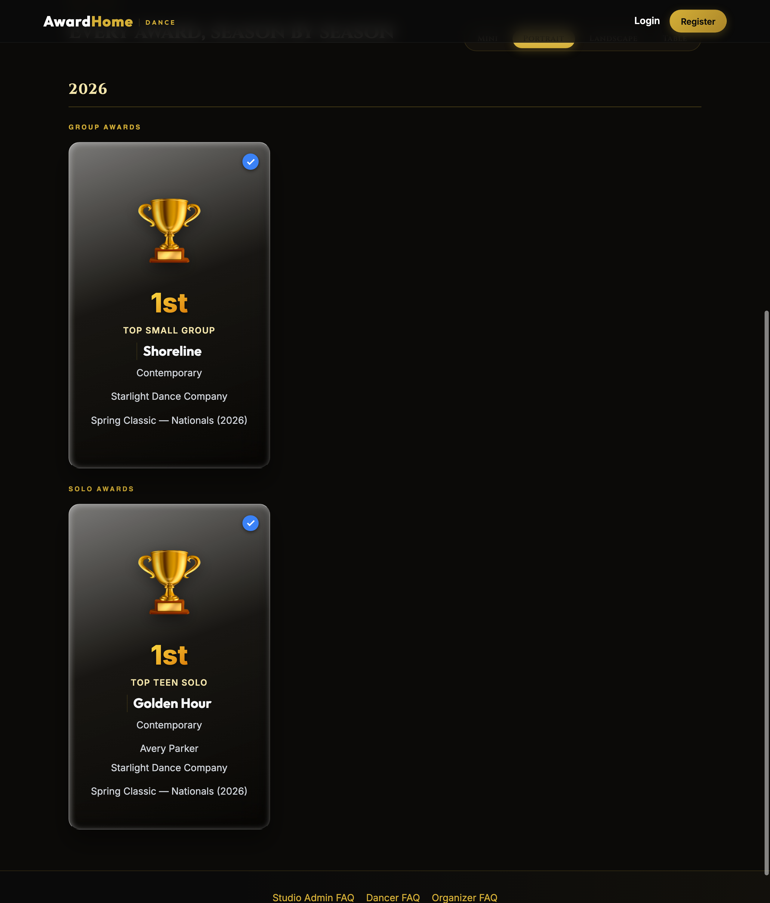
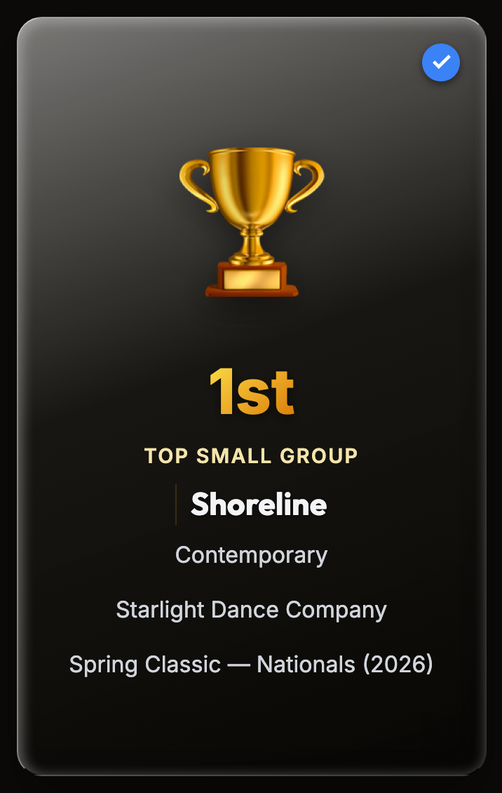
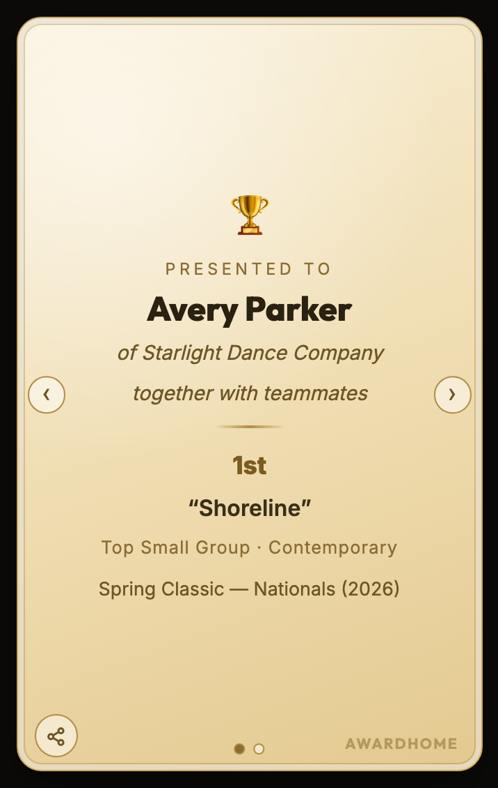
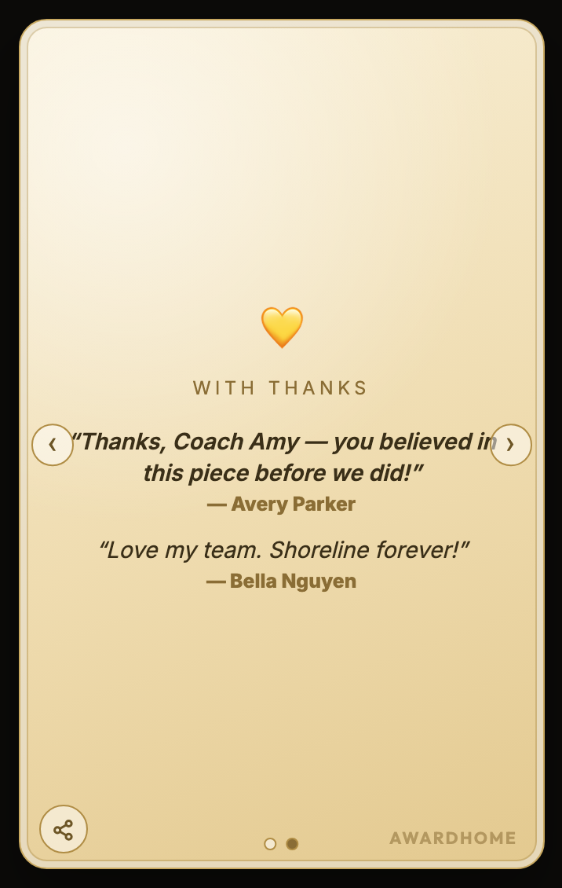
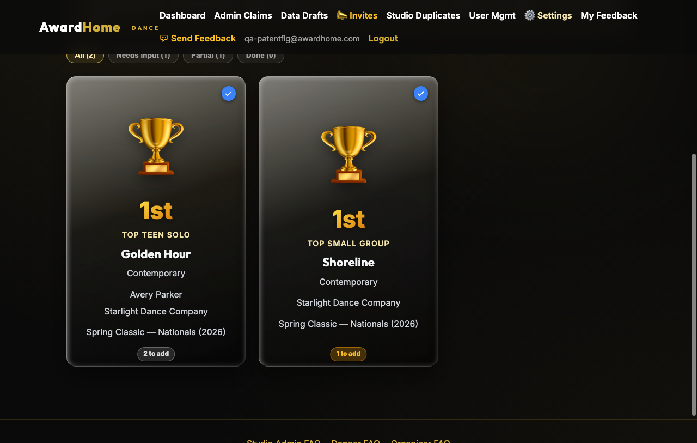
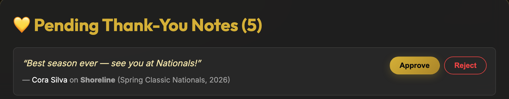

SUPP. FIG. A
Public dancer page ("digital trophy case"), season-grouped award-card grid. Group card front is roster-free (spec ¶[0019]); solo card front carries the participant's name and studio attribution. Reduction to practice of the artifact of FIG. 2.

SUPP. FIG. B
Group award card, front face (201): placement, award type, performance name, category, studio attribution, event/season; verification badge. No member roster on the most-shared face (¶[0019]).

SUPP. FIG. C
Back-stack page 1 — certificate ("Presented to … together with teammates"), always present so the first flip lands on a complete page (¶[0014]); share control and pagination dots on the back across pages.

SUPP. FIG. D
Acknowledgements page of the same group card, rendered on member Avery Parker's page: Avery's approved line is pinned first, teammate's approved line follows, and a third teammate's PENDING line is absent — demonstrating per-viewer composition (¶[0018], claim 2) and conditional materialization (¶[0016], claim 1) together.

SUPP. FIG. E
Single-surface WYSIWYG editor (¶[0022], claim 3): the owner edits the actual card objects; front faces carry completeness chips ("2 to add" / "1 to add") with incomplete-first ordering and filter chips.
SUPP. FIG. F
Edit mode only: a page that would not materialize publicly is materialized as an inline-editable placeholder ("Write your thank-you note here…") with in-card save — public rendering never materializes placeholders (¶[0022]).

SUPP. FIG. G
Operator moderation queue (/admin/card-content): the pending acknowledgement of SUPP. FIG. D awaiting approval — the gate whose state drives conditional materialization (¶[0023]); approval would materialize the page on every member's card.